She lived a comfortable life in California, but Marie Walsh had never told her husband or children the truth - she was a fugitive, who broke out of jail in 1976. Then one spring morning in 2008, a police officer turned up in her garden with a mugshot of her aged 19 - and the past she'd kept hidden for three decades crashed in.
Hours to shutdown: Thousands of tourists queuing for last chance to visit Statue of Liberty as budget deadlock continues
Learning to live again: How Jaycee Dugard has rebuilt her life - but now faces agony of testifying against man 'who kidnapped her'
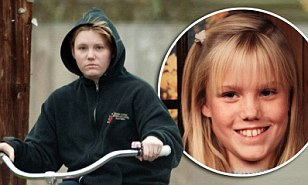Recent photos of Jaycee Dugard, her two daughters and her mother strolling down the street paint a poignant picture of lives slowly being rebuilt. Though the recent surprising actions of her alleged kidnapper and his wife may bring their precious sense of reality crashing down. ...read
- 'Fugitive mom': Woman reveals her double life after she escaped jail as a teenager and lived under new name for 30 years
- Is spring break about to be cancelled? Top U.S. tourist sites face closure this weekend as shutdown talks fail to reach a deal
- Fifteen-year-old girl shoots dead her soldier mum... then invites her boyfriend over to have sex upstairs
- Televangelist priest quits after affair with his second cousin
- Scientist gives his wife an STI during sex - after catching it from a mosquito
- IRS awards $4.5MILLION to accountant for tax tip-off in first ever whistleblower award
- 'I got five on the white girl!': Amazing video of chair fight that caused carnage in Denny's diner
- Feeling the pinch? Welcome to New York's newest - and smallest - luxury hotel room at $149 a night
- Chanel supermodel calls police after husband 'brandishes knife in New York apartment'
- Staying put? Matt Lauer's plan to leave the Today show could be well-timed power play to net a $25MILLION salary
- Saudi Prince's Beverly Hills 'mega-mansion' to be downsized after complaints from wealthy neighbours
- Residents forced to move from their homes so the Church of Scientology can expand its golf course
- NYPD 'rape victim' is seen walking steadily to her door... despite witness claims she was too drunk to stand up
- A whole new world: Disney breaks ground in Shanghai for £2.25 BILLION theme park (that's not just the bare necessities)
- Caught on tape: Naked man with AK-voids fire on SWAT team robot (but then gets dressed and surrenders to police)
- Alcohol causes cancer - and giving up won't help
- 'They knew what was going on': Bernie Madoff points finger at big banks during his scam
- Flight of rage: Angry passengers delay holiday jet after airport showdown over confiscated duty free
- 'We're not gonna let this die': Mother of alleged rape victim rages as accused molester is released on legal loophole
- Posthumous award for 1936 high school graduate denied top honours as principal vowed not to have a black valedictorian
- Would you pass the wedded bliss quiz?
- Peace on earth... but not in Louisiana: State comes bottom of U.S. 'peace index'
- MORE HEADLINES
- SamCam and her low-Costa birthday treat: David Cameron whisks away wife on Ryanair flight to Malaga
- Girl clubber jailed for 'ruining the life' of budding Hollyoaks actress she left blinded in late-night glass attack
- Cars, whole houses and even severed feet in shoes: The vast field of debris from Japan earthquake and tsunami that's floating towards U.S. West Coast
- Officer shot dead and another is fighting for life after voids fire as mayor visits nuclear sub HMS Astute
- Police 'hid' abuse of 60 girls by Asian takeaway workers linked to murder of 14-year-old
- Bored stiff: Student yawned so hard during lecture that she couldn't close her mouth
- Kate Middleton? She's a real doll... and here's the proof: But she might not be too impressed by the likeness
- 'A wee man with a need to be noticed': Sir Alex blasts back at police chief who dared to question Rooney's outburst
- Head who gave out 717 detentions in four days sparks fury of parents who say 'it's not a prison'
- Portrait of a tortured man: How Nick Clegg became the Tim Henman of politics
- School leavers unfit for work: 'Firms forced to spend billions on remedial training for victims of education failure'
- Schoolboy, 14, choked to death on computer memory stick despite brother's bid to save him
- Glorious sunny weekend for Britain with mercury to hit 21C... but mini-heatwave sparks drought fears
- Fleeing for their lives: Survivors of Rio school massacre seen on CCTV sprinting away from class where voided fire
- Revealed: How TV Islamic extremist who hates Britain enjoys £1,250-a-month benefits and rent-free luxury flat
- Double joy! Mother who had to give back baby after IVF mix-up now expecting TWINS
- Elderly nuns suffered in silence as they were 'starved and abused by convent care staff'
- A cheer-ful tale: How abandoned wife, 42, became the NFL's oldest cheerleader... and inspired a Hollywood movie
- 'I would have locked Rooney up': Police chief hits out at star's F-word rant
- It's even worse than we feared: Cost of national debt to each family is a staggering £138,360
- Judge in 'paedophile' row court case accused of being 'influenced by alcohol'
- Britain's £6bn bill to bail out Portugal... and will Spain be next?
- MOST READ IN DETAIL
Editor's six of the best
-
'Good luck' coins thrown into hot spring have turned one of nature's wonders into a lurid hue of green
-
Look at him now! Patrick the Pit Bull makes remarkable recovery after being left for dead in trash chute and becoming an internet star
-
3D artist who is simply streets ahead when it comes to drawing on the public's imagination
-
Why DOES tea taste so funny on planes? We solve all your in-flight mysteries
-
It's Mickey Mao: Disney breaks new ground in Shanghai for £2.25billion theme park
-
Amazing set of cold snaps by award-winning Arctic photographer
Femail Today
- Meet Kate Middleton's cousin, the Queen of Burlesque (who likes to strip to Rule Britannia) Katrina Darling ends her act wearing red nipple tassels and a thong
- Is this the holy grail of weight loss? How a new 17-day diet promises a healthy quick fix for dropping pounds fast Can expect to lose 10-12lb
- Why is Katie Holmes STILL failing to charm America? After a string of movie flops, the actress's star status has been steadily falling...
- Was a voting glitch to blame for Pia Toscano's shock elimination from American Idol? Hundreds lobby for her to return after unexpected exit
- Still sexy at 68: Stephanie voids up about her love affairs Hart To Hart actress also reveals her battle with cancer
- Oops! Carmen Electra blends into the carpet as she makes a beginners error at awards show Playboy covergirl's hard work getting ready went to waste
- It can't be easy being married to Russell Brand - first his film gets panned, now he's ogling Trudie Styler and Kelly Ripa's bottoms
- Revealed: The man trusted to create the hairstyle of the year for the Royal Wedding James Pryce will tend to Kate's chestnut locks
- Bullying? No, here's what really happened when I was at boarding school with Kate Taffeta Gray tells what really happened at Downe House
- NFL superstar Peyton Manning welcomes twins Marshall and Mosley Daughter and son for Peyton and wife Ashley
- Who'd have thought it! Nicki Minaj is transformed into a beauty as she ditches outlandish stage outfits Moment 4 Life rapper posed with style
- Girl nightclubber jailed for 'ruining the life' of budding TV soap actress she left blinded in late-night glass attack Charlotte still has shards of glass in her eye
- She's got some cheek! The Saturdays' Frankie Sandford wears bottom-skimming gladiator skirt to film new video Sure to stand out from the other girls
- Secret to a perfect bust? Wearing a bra in bed... according to TV presenter Mariella Frostrup, anyway She got the advice from the late Paula Yates
- Eating for two? Pregnant Victoria Beckham and husband David join Gordon and Tana Ramsay at fancy Los Angeles restaurant Expecting baby girl
- 'It was heartbreaking': Tearful Eva voids up about her divorce for the first time Spilt amid allegations of his infidelity
- League of his own: Justin Bieber shows off some serious soccer skills as he trains with FC Barcelona Teenage heartthrob is multi-talented
- 'My secrets to looking fantastic at 50,' by Julianne Moore Actress also revealed need to 'get away from the children' to be sexy
- Curvy and confident: Reality star Lauren Goodger shows off her bikini body on the beach Vowed to shape up after she was called 'huge' by then-ex Mark Wright
- J-Glow! Jennifer Lopez is left red faced as Iggy Pop dirty dances inches away from her on American Idol Punk rocker, 63, thrust his way through Wild One
- Israeli model Bar Refaeli looks cool and casual as she jets in to JFK... but boyfriend Leonardo DiCaprio tries to hide
Look at him now! Patrick the Pit Bull makes remarkable recovery after being left for dead in trash chute and becoming an internet star
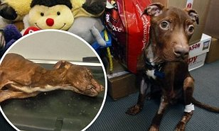Just last month the New Jersey dog was brought in emaciated and with a body temperature so low it wouldn't register. Doctors thought he would be dead within the hour, but the plucky pooch has fought back. Now Patrick, named for his reddish fur and because he was found the day before St Patrick's Day, has become something of a celebrity. ...read
Officer shot dead and another is fighting for life after voids fire as mayor visits nuclear sub HMS Astute
Is the net closing in on Craigslist Ripper? Police 'know identity of elusive serial killer'
'I got five on the white girl!': Amazing video of chair fight that caused carnage in Denny's diner
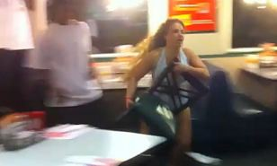An incredible late-night fight involving chairs, tables, salt shakers and many other objects lying around in a Denny’s restaurant in Port Charlotte, Florida, is becoming an online hit. One woman almost lost her modesty as her black underwear was exposed, but that didn’t seem to bother her as she threw chairs and knocked over tables. ...read
Peace on earth... but not in Louisiana: State comes bottom of U.S. 'peace index'

The first-ever regional ranking of peace in the U.S. has found the country was eight per cent more peaceful in 2009 than in 1995, but there is a big variation between states.
A very modern proposal: Man pops the question via girlfriend's favourite blog... and records her ecstatic reaction on his webcam
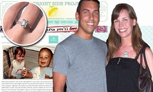
Matt Mordarski, 29,wouldn't settle for anything as tried-and-tested as going down on one knee - so he turned to technology to create a unique proposal. The advertising executive from Ann Arbor, Michigan, asked his girlfriend to marry him in post on her favourite blog - then recorded her ecstatic reaction on his webcam. ...read
Man arrested for using vacuum cleaner to suck coins out of vending machines
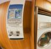
Police have charged William Logan Jr after he was reportedly captured on CCTV using a vacuum cleaner to suck coins out of washing machines in Nebraska.
'He was choking me... it was like a bad dream': Woman reveals how she survived attack by cross-dressing commander who raped and murdered two women
As her attacker faces having to spend the rest of his life in jail, Laurie Massicotte speaks on TV for the first time about the night he attacked her. Russell Williams was sentenced to life in jail last year after he admitted to 88 lurid sex crimes, including two counts of first-degree murder, two counts each of sexual assault and forcible confinement and 82 break-ins and attempted break-ins. ...read
How 'good luck' coins thrown into a hot spring have turned one of nature's wonders into a lurid hue of green
For decades it has proved a popular tourist attraction. And while the Morning Glory Pool in Wyoming with its stunning colours continues to attract visitors from around the world its appearance has undergone a dramatic change. Just a few decades ago, the natural hot spring was a distinctive blue colour. But now it has taken on a deep green hue with a distinct yellow and red ring around its circumference. ...read
Saudi prince's Beverly Hills 'mega-mansion' to be downsized to a mere 55,000sq ft after complaints from his wealthy neighbours... so how ever will he cope?
The law firm representing the business that bought the 5.2-acre hillside lot in Benedict Canyon withdrew the application on Thursday after petitions from neighbours. The project, which would have included a 42,000-square-foot main residence, villa guest house, caretaker's house and staff quarters will go ahead but with some revisions. ...read
EDITOR'S 6 OF THE BEST
The 3D artist who is simply streets ahead when it comes to sidewalk works of art
Kurt Wenner, 52, a former NASA employee, has produced a book of his most stunning creations
- Dial R for retro: Classic rotary telephone spruced up for the digital age
- Last one in's a flightless bird! Amazing cold snaps of award-winning Arctic photographer
- How 'good luck' coins thrown into a hot spring have turned it into a lurid hue of green
- Residents forced to move so the Church of Scientology can expand its golf course
- Artist fills entire city block with discarded footwear to highlight plight of the homeless
DON'T MISS
- Plastic chair and peeling paint, anyone? British Prime Minister and his wife take budget break to Malaga Three-star hotel for David and Samantha Cameron
- Twilight's Taylor Lautner and Phil Collins' daughter Lily enjoy date night in matching outfits Couple met while filming action movie Abduction
- Taylor Swift shows her slender frame in a babydoll dress... after filling up at an all-you-can-eat meat buffet Where did she put it all?
- Lock up your daughters... Charlie Sheen is in town! New York braces itself for Torpedo Of Truth tour Gigs so far have only been warm-ups
- Real Housewives of Washington DC cancelled after just one season It's the first time one of the reality TV franchises has been axed
- Talk about a car crash! Rough road ahead for Jeremy Clarkson after lurid tabloid allegations of affair with Top Gear colleague
- Chocs away! Pregnant Kelly Brook set to add to her curves with a weekend feeding her chocolate cravings in Belgium
- It's a boy! Sopranos star Drea de Matteo welcomes baby Waylon Albert 'Blackjack' Jennings Actress gave birth in LA and father tweeted news
- 'He made me feel like the luckiest woman on the planet' says Ted Kennedy's widow Family misses the big shoulders that all of us leaned on
- Does my car look big in this? Kim Kardashian's new slimming secret... stand next to a monster truck If only it were that easy!
- Hot to trot: Wayne Rooney's WAG Coleen looks pretty in pink as she attends horse races Mother-of-one wore Azzedine Alaia
- Bunny girl Tori Spelling celebrates an early Easter with her festive family Basket-making with husband Dean and children Liam and Stella
- Nicki Minaj shows off her cotton candy hair as she squeezes into another unique outfit Teamed gravity-defying 'do with multicoloured PVC dress
- That will stop traffic! Audrina Patridge unveils huge bikini billboard on Sunset Boulevard Advert for teen brand Bongo is more than a mere distraction
- Forgotten something? Kendra Wilkinson leaves her slippers on at Dancing With The Stars rehearsals Reality star must have been in a hurry
- Is LiLo's career saved? Victoria Gotti 'hand picks' Lohan to play her in John Travolta's mob film Troubled actress's fortunes may have turned
- Red Riding Hood's Amanda Seyfried throws parking ticket back at traffic warden after film premiere She's not afraid of the big bad warden
- Caught short! Miley Cyrus steps out in barely there Daisy Dukes Hannah Montana star, 18, is fast becoming a must-watch fashionista
- Kim Cattrall admits that playing Sex And The City man-eater Samantha Jones has made dating 'difficult' Actress, 54,voided up to Ellen
- From a Ferrari to a cheap take-away: Busy Heidi Montag settles on a modest lunch while she films new reality show
- Cross-seasonal dressing? Leggy Sienna Miller flashes her limbs in summer frock as she keeps warm in a fuzzy jacket Actress, 29, in London
- How uncouth! Helen Mirren laments having to get down on all fours for handprint ceremony The Dame, 65, recreated ungainly position for Jimmy Fallon
- Nice hair honey! Whitney Port swaps light blonde locks for golden waves The City star debuted new 'do at Lucky Magazine's launch in LA
- Shy Katy Perry turns male companion into a human shield as she hides behind hunky friend Grey scarf and coffee cup also used for camouflage
- Supermodel Lily Cole is back to her ravishing red after spending winter on the dark side Dyed her hair for a film role but is au naturale again
- Elle 'The Body' Macpherson accentuates her already long and lithe limbs in lime green pantsuit It's hard to believe she's 46
- Renee Zellweger the sexy singleton pulls a slinky pose out of her bag of tricks The actress certainly isn't moping around at home
- What a gem! Little Ruby Cole the clear favourite on day out at horse races with soccer player father and WAG mother All eyes were on the baby
- Charlie Sheen's third 'goddess' joins his harem of blondes on Torpedo of Truth tour Megan Levant, 26, is lending her own special brand of support
- Kate Middleton? She's a real doll... and here's the proof: But she might not be too impressed by the likeness Figurine has gone on sale
- Cold front: Sadie Frost is the face of Fashion Targets Breast Cancer Actress turned fashion designer aiming to raise more than $1.6m with T-shirts
- Six appeal: Remaining original Calendar Girls pose for 2012 edition Their inspirational story was turned into a hit film starring Helen Mirren and Julie Walters
- Sister act! Carol Vorderman's lookalike daughter Katie is a chip off the old block Theatre trip for TV presenter and her 19-year-old girl
- 'Thank God I don't have a woman in here'... Myleene Klass's fiancé makes joke as she surprises him at Cardiff hotel Taken in jest... thankfully
- We're stronger than ever... and so is our romance! Cameron Diaz gives Alex Rodriguez the look of love after gym date Fitness fanatics in NY
- Russell Brand sets out to prove his comedic credentials on American Idol after critics pan his Arthur remake Katy Perry's husband has been slated
- Brunettes have more fun: X Factor finalist Katie Waissel swaps her blonde crop for a long brown wig as the show's tour reaches Wales
- 'I can't believe you are doing this to me!': Glee's Matthew Morrison cringes over unearthed clip of him in gay boy band Had bit part in Marci X
- Hooray for Carole Middleton and her frump-free style How could she have anticipated the frenzy of attention on her and her family?
- Dr Conrad Murray wants Michael Jackson autopsy photos banned from trial Lawyers fear the images could prejudice the jury
- My baby saved my life: Mother's deadly bone marrow disease is cured by pregnancy Doctors had told Anna it was incurable
- Ex-Doctor Who star David Tennant's baby Olive makes her debut First public appearance since her birth a couple of weeks ago
FANCY THAT
Scroll through for the most amazing stories from around the globe
-
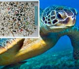
KILLED BY POLLUTION
Hundreds of pieces of plastic found inside stomach of sea turtle -
ROAD RAGE, POLAR BEAR STYLE
A photographer captured the moment a polar bear put his huge white paws on his car window - before unleashing a mighty roar -
MISSING MORE THAN JUST A WHEEL!
A Bristol motorist was so drunk he drove for four miles without realising he had a wheel missing -
WHO NEEDS PLASMA? MAKE MINE MAHOGANY
The oldest TV set in Britain: Built in 1936, it's only had two careful owners... and it still works -
AND YOU THINK YOUR PLACE IS POKY?
Is this America's smallest apartment? Woman describes life in 90 sq ft home -
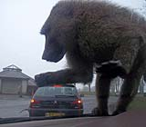
KING KONG CRUSHES CAR WITH HIS PAW
Well kind of. This optical illusion shows a baboon at Knowsley Safari Park -
SING A SONG IN COURT FOR ME, WILLIE
A Texas prosecutor has agreed to let the singer, 77, avoid prison but only if he sings 'Blue Eyes Crying In The Rain' in court -
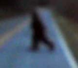
CAN THIS REALLY BE BIG FOOT?
New video has emerged of an 'ape man' crossing a road in North Carolina -
 92 AND SHARP AS EVER WITH A SWORD
92 AND SHARP AS EVER WITH A SWORD
Dennis Willcock is a world champion fencer and recently competed at the British Veterans' Fencing Championships -
KILLED BY POLLUTION
Hundreds of pieces of plastic found inside stomach of sea turtle -
ROAD RAGE, POLAR BEAR STYLE
A photographer captured the moment a polar bear put his huge white paws on his car window - before unleashing a mighty roar
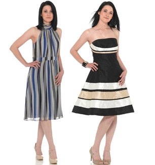
IN FEMAIL TODAY...
- FASHION: Proof that stripes going around DON'T add pounds
- BEAUTY CONFIDENTIAL: Top tips from the skincare queens
- EXPERT GUIDE: How to give yourself the vampy look
- CELEBRITY DIET: Amanda Lamb reveals how she eats healthily
- RELATIONSHIPS: Will I never be free of my husband's ex-wives club?
- TREND: Culottes provide a practical alternative to summer skirts
- HOT HAIR: At last I've found the secret of BIG hair... and I'm blown away
- HEALTH: Are YOU addicted to wine o'clock?
It's Mickey Mao: Disney breaks new ground in Shanghai for £2.25billion theme park
Walt Disney is creating a new £2.25billion Disneyland in Shanghai's south-eastern suburbs complete with the world's biggest Magic Kingdom castle. Managers are hoping 7.3million visitors a year will visit the 3.9 sq km park when void in five years time. Disney's latest venture comes almost 60 years after its first park was built.
...read
Going up... for auction: Spaceship that put Russian dog into orbit 50 years ago
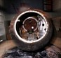
The seven foot wide spherical Vostok 3KA-2 was used during the final practice run before the Russians became the first nation to put a man into orbit.
THE BEST OF THE WEB - DIGESTED
-
Now THAT is how to take a penalty
-
Are we living in the age of the giant quake?
-
Is Gaddafi Jewish?
-
What women really feel about their Facebook friends
-
How your name decides your destiny
-
$10m-a-year media watchdog declares war on FoxNews
-
Does beauty buy you happiness?
-
Obama, the last emperor: How Europe is taking the lead in a post-American world
-
What is the real chance of us being wiped out by an asteroid?
-
Social networking sites are over-priced, says investment guru Warren Buffett
-
Why everyone hates 'Sucker Punch'
-
Is an invisible 'X' galaxy is crashing into our own?
-
The evolution of Wonder Woman since the 40s
-
Video shows cop shooting teen in cold blood
-
The real Salt: Supermodel brainwashed into becoming a CIA spy
-
Did the universe used to have only two dimensions?
-
Chinese man sells his kidney to pay off gambling debts
Mother charged with attempted murder admits withholding at least five months of cancer medication from her autistic son

Kristen LaBrie, 38, of Salem, Massachusetts, said she stopped giving her son Jeremy his cancer medications during the final phase of his treatment because she 'didn't want to make him any sicker'.
Police officer pepper sprays baby SQUIRREL in front of horrified students
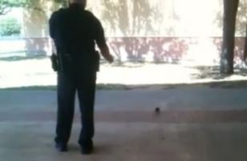A video recorded by one of the students that was posted on YouTube has sparked outrage in the city of Mesquite, Texas. The tiny animal, which is barely the size of the police officer's foot, is seen scurrying around outside, not harming or bothering anyone. ...read
Showbiz extra
- Gloria Estefan lends some star power to Miami X Factor auditions Singer rallied the 7,500 hopefuls at the University of Miami
- Ashley Judd insists her mother Naomi and sister Wynonna are not upset by her tell-all memoir Reports emerged that her family were not pleased
- Rachel Stevens is an effortlessly yummy mummy as she slips into skinny jeans just four months after giving birth
- Here come the Men In Black: Will Smith is back in the suit as he shoots the film's third instalment It's been more than 13 years since the first
- Kate Moss's ex Pete Doherty is warned he faces jail after admitting possession of cocaine - but why was he wearing a barrister's wig?
- The Only Way Is Essex's Sam Faiers gives onscreen love interest Joey Essex the cheek-off Was reluctant to pucker up to 'Ken' doll lookalike
- Heir drama: Paris Hilton looks glum after missing flight home Reality TV star and parents Kathy and Rick were delayed after Paris forgot her ID
- Halo boys! Pregnant Kelly Brook looks angelic as she blossoms in peach at new deodorant launch Kept bump hidden in loose mini-dress
- Family fun in the sun for glamour model Nicola McLean as she enjoys the park with husband Tom and son Striker
WORLD NEWS
- Fleeing for their lives: Survivors of Rio school massacre seen on CCTV sprinting away from class where voided fire
- NATO refuses to apologise for 'friendly fire' air strike that killed 13 rebels
- Now millions in Japan suffer blackouts after strong aftershock knocks out six power plants
- Bound for China? Smugglers caught with 1,800 monitor lizards in Bangkok planned to 'sell them for food'
- 'Massacre' at Camp Ashraf: Iranians call for international help as Iraqi soldiers run down refugees in armoured trucks, killing 25
- Young boy saved by hero brother in Queensland floods is beaten up by thugs who boast about attack on Facebook
- Up to 100 bodies found burned alive in Ivory Coast as Liberian mercenaries carry out 'ethnically motivated' killings
- Netherlands to vote on law banning slaughter of meat by halal and kosher methods
- I should smash your face in, Sarkozy tells author who suggested Carla be kept away from 'handsome men'
- Sun, sea and sand but no women: The sea lions who live on a male-only island in the tropics... but don't seem to mind a bit
- From Russia with love: The doting father bear who can't help cuddling his cub
- French troops in night vision goggles rescue Japanese ambassador as forces storm Ivory Coast president's mansion
- Mexican police unearth 59 bodies in pits as they search for abducted bus passengers 80 miles south of U.S. border
FANCY THAT
Scroll through more of the most amazing stories from around the globe
-
BRITAIN'S SMALLEST TWIN IS HOME AT LAST
Born at 23 weeks, Freya-Grace - whose sister Mollie died at two days old - has finally been let out of hospital after eight months -
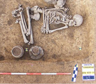
WAS THIS THE FIRST GAY CAVEMAN?
The 5,000-year-old skeleton has been 'outed' by the way he was buried - with household jugs, and no weapons -
IS IT A PIG? IS IT A TURTLE?
Just what was the mysterious river creature that turned a Somerset town into an internet sensation? -
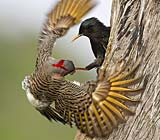
ANGRY BIRDS GETTING IN A FLAP
Nesting flickers are evicted from their home as bully boy starlings move in -
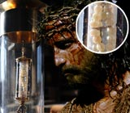
'THORN FROM JESUS' CROWN' ON DISPLAY
The relic has been kept at Stonyhurst College, in Clitheroe, Lancashire, for the last 200 years -
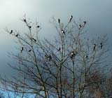
THE MAGPIE TREE
The picture of 21 magpies in a tree that proves population is out of control -
WE CALL THIS ONE THE FLORA SEASONS
Royal Philharmonic help put science to the test by playing to auditorium packed with plants -
DO YOU THINK HE SAW US...?
Creationists claim this cave drawing in Utah is proof that dinosaurs and humans at one time lived side by side -
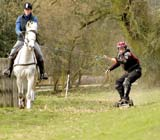
THAT'S TOTALLY HORSE-SOME DUDE!
Skateboarders find novel way to ride in latest extreme sport craze -
BRITAIN'S SMALLEST TWIN IS HOME AT LAST
Born at 23 weeks, Freya-Grace - whose sister Mollie died at two days old - has finally been let out of hospital after eight months -
WAS THIS THE FIRST GAY CAVEMAN?
The 5,000-year-old skeleton has been 'outed' by the way he was buried - with household jugs, and no weapons
Emerging from the sands of time: Lost German bomber discovered on shifting seabed off British coast thanks to sonar
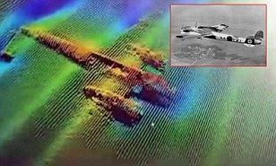The finding of the Dornier 17 near Goodwin Sands in Kent has amazed experts and left them 'incredulous' - and as it is in such good condition it may go on show. New high-tech sonar technology managed to uncover the the World War II plane last month, when a team on board Yantlet, a Port of London Authority (PLA) vessel, disembarked from nearby Ramsgate. ...read
Meet the Arkansas Rampage – an all-female football team learning how to tackle the competition
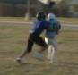
By day they are students, career women and mothers but once they strap on helmets and shoulder pads, they are transformed into the Northwest's first female football team.
TODAY'S POLL
OUR TOP 10 BREAKING VIEWS
-
RICHARD LITTLEJOHN: It's no wonder so many firms end up on the scrapheap
-
JAN MOIR: Rebecca, just one more lost soul cut adrift by drugs
-
MARTIN SAMUEL: Sorry, Nick, it'll always be about who you know
-
TOM UTLEY: Clegg-bashing is a bit like clubbing baby seals - he even rivals dear old Prince Charles for self-pity
-
MAX HASTINGS: Do stop apologising, Dave: How the PM feels compelled to knock Britain abroad
-
DOMINIC SANDBROOK: A gilded political elite, hypocrisy and the death of social mobility
-
CRAIG BROWN: Let's wave goodbye to celebrity royals
-
QUENTIN LETTS: We may have a Tory PM - but Lefties and luvvies still run Britain
-
SANDRA PARSONS: First-name terms with 'Sir' spells real trouble
-
ANDREW ALEXANDER: Punch and Judy politics? That's the way to do it
She's still got it! Grandmother throws honorary first pitch of the season... on her 109th birthday
Violet Smith took to the baseball field to throw the honorary first pitch of the season for the Great Lakes Loons in Michigan on her 109th birthday - and she wasn't the least bit fazed by the prospect of making her debut in front of a packed audience. ...read
BEST OF OUR BLOGGERS
ANNE SHOOTER
LIZ JONES - FASHION DISPATCHES
Peter Hitchens
Paul Connolly
TOP SPORT STORIES
- Fergie on the rampage: Man United boss questions future of ref after Rooney ban Sir Alex Ferguson launches a blistering attack on the FA
- LIVE: The Masters Keep up to date with all the action as it happens from day two at Augusta. Stay with Sportsmail for all the latest news and pictures today
- Cole hit by charge over Twitter 'joke' Carlton Cole has been charged by the FA over comments he made on Twitter about Ghana fans at Wembley recently
- Wenger hails 'amazing' Arsenal despite fear of sixth straight season without silverware Arsene Wenger launched an defence of under-fire players
- Fears over future of Bale and co as Spurs reveal squad cutbacks are on the cards Tottenham may be forced to sell some of their leading players
- Liverpool's injury crisis mounts as Gerrard is ruled out for rest of season England midfielder has failed to recover from a groin injury
- Webber leads the way in Malaysia Mark Webber saw his practice advantage dramatically slashed by Jenson Button in the second session
- Grand National sweepstake: Print out and play with mates Spice up your countdown to the Grand National with Sportsmail's brilliant sweepstake kit